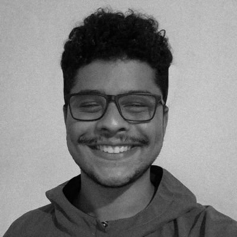

Olá! Meu nome é Nathan Gomes, sou designer gráfico.
Minha trajetória no design teve início bem cedo. Quando criança, assumi o papel de diretor criativo mirim em vários trabalhos em grupo, que eram bastante complexos para a época, solicitados pelas professoras de ciências e geografia. Foi nessa fase que ouvi pela primeira vez sobre o curso de Desenho Industrial. Meus amigos, assim como os adultos, me incentivaram a estudar para que um dia eu pudesse me formar nessa área. Durante o ensino médio, comecei a trabalhar como designer freelancer, embora ainda não tivesse uma compreensão completa do que significava ser um designer.
Finalmente chegou o momento de escolher minha faculdade e optei pelo Curso Superior de Tecnologia em Design Gráfico do Instituto Federal Fluminense, onde adquiri a maior parte do conhecimento que tenho hoje ao longo dos três anos e meio em que estive matriculado lá. O curso, no entanto, foi descontinuado, então, por uma questão estratégica, transferi-me para o curso da Cruzeiro do Sul, também na modalidade CST.
Durante esse período acadêmico, tive várias experiências profissionais, trabalhando em empresas da área industrial, como a G8 e o Grupo Express, na agência Matiz, e também atuando no cenário de esportes eletrônicos, na Hero Base.
Veja mais alguns dos meus projetos pessoais:
Contato
Informações de contato.